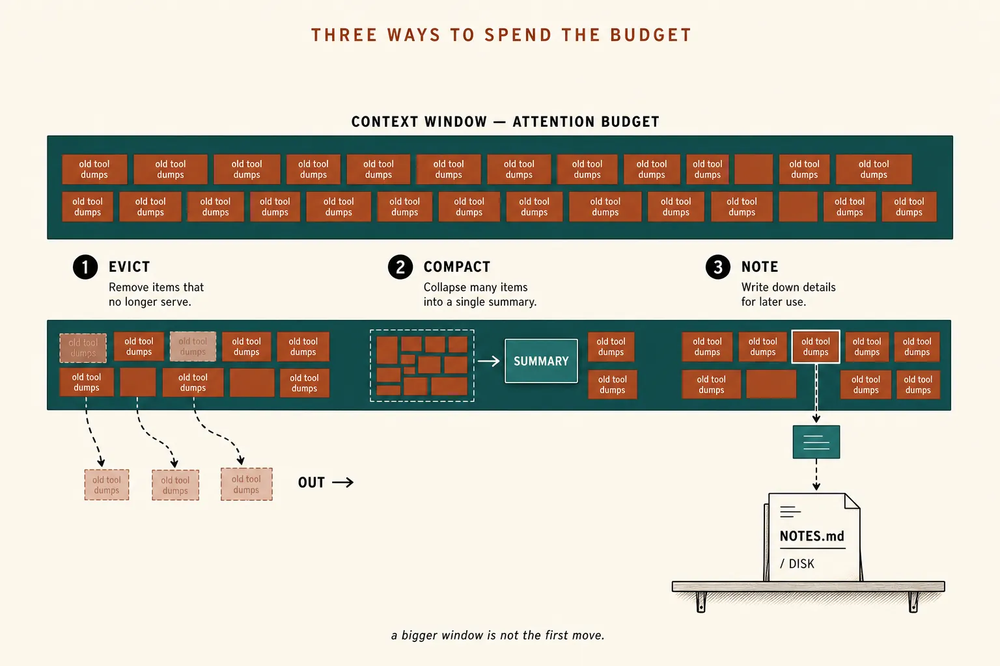
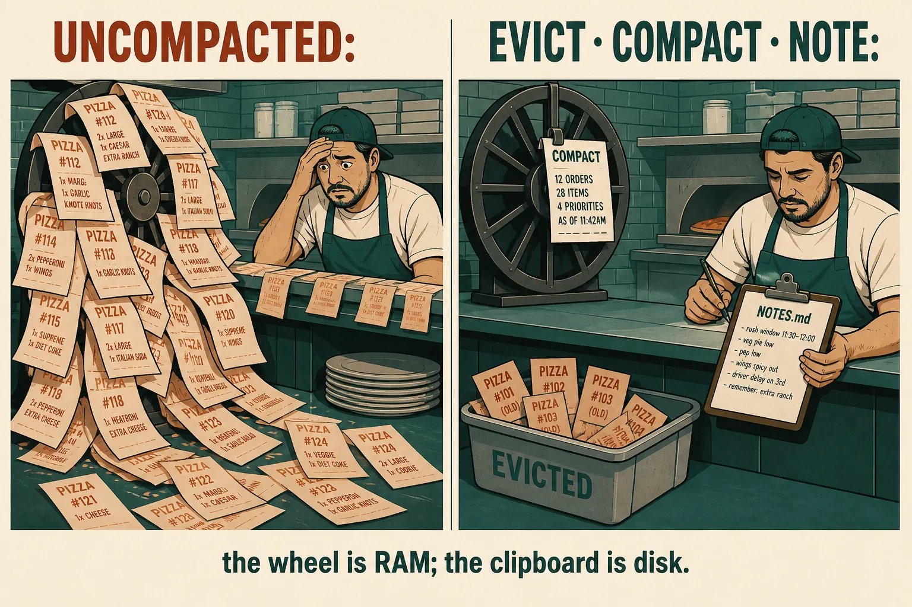
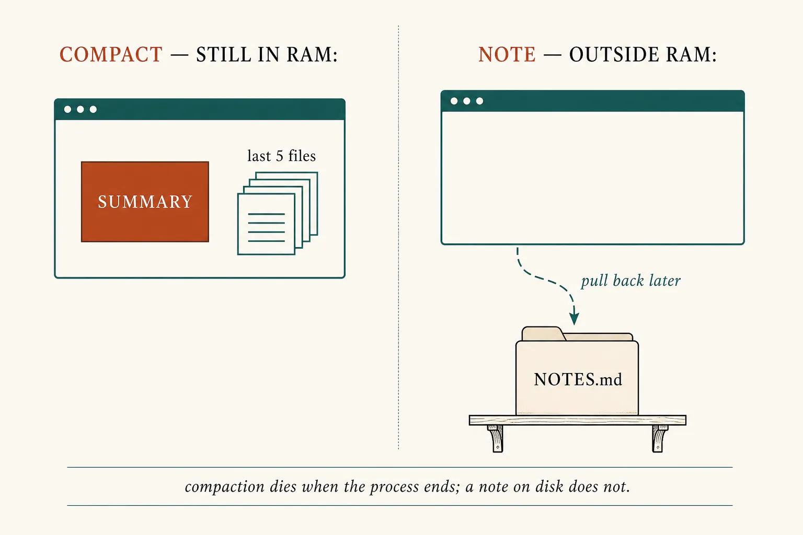

Context engineering
Evict, compact, or write a note
Lesson 0008 kept the SOPs off the system prompt. The agent loop still fills RAM with tool dumps. Context engineering is choosing, each turn, the smallest set of high-signal tokens — not hoping a bigger window will save you.
What this is. Anthropic’s name for curating the whole window during inference: system, tools, history, dumps — not just the prompt. Tonight’s skill is three levers when RAM fills: evict, compact, note. Effective context engineering for AI agents
What this is not. A second model. A bigger context window as the first move. Sub-agents, just-in-time search, or prompt caching — parked. Not a ChatGPT menu item named “Context.”
- 1 · EvictDrop low-signal tokens. Lightest: clear old tool dumps.
- 2 · CompactSummarize the log. Next call gets the summary, not the raw turns.
- 3 · NoteWrite outside RAM. Pull the file back later. Survives a reset.
Same window as lesson 0002. The harness spends it on purpose — that is a harness job from 0007.

Guiding principle from the essay: the smallest set of high-signal tokens that still gets the job done.
Prompt engineering was the prompt. This is the rest of the window.
Prompt engineering is how you write the standing orders. Context engineering is what you pass on this call — including everything the loop just generated. An agent in a while-loop (lesson 0006) produces more tokens every turn. Someone has to curate, or the attention budget rot from lesson 0002 shows up as “it was in the prompt” failures. Same essay · “Context engineering vs. prompt engineering”
You can stack them. Evict first. Compact when the log is still too long. Note before the process dies.

Kitchen only to make the three levers concrete. The load-bearing picture is the bar above.
One shift · walnut crumb, eight oven probes
# UNCOMPACTED — every dump still in RAM
check_oven() → {temp: 180, log: "…480 tokens…"} # ticket 1
check_oven() → {temp: 182, log: "…480 tokens…"} # ticket 2
… six more dumps …
user: "Stone still cold?"
# EVICT — lightest touch (context editing)
check_oven() → [cleared: old tool result] # tickets 1–7
check_oven() → {temp: 188} # ticket 8 stays
# COMPACT — new window, summary in RAM
SUMMARY: stone 180→188, target 240, walnut SOP
already loaded. Unresolved: preheat.
last files: oven/SKILL.md, ticket-8
# NOTE — disk; the process can die
NOTES.md: "Walnut crumb. Stone 188. Target 240."
What this shows. The question did not change. The tokens the model sees did. Evict drops the dumps. Compact replaces the log with a high-fidelity summary (Anthropic: keep decisions and bugs; discard redundant tool output). A note is the same facts on disk, so morning-you does not need last night’s transcript.

Compaction dies when the process ends. A note on disk does not.
The art is what to keep
Anthropic: overly aggressive compaction loses subtle facts whose importance only shows up later. Tune for recall first (did we keep every load-bearing decision?), then precision (did we drop the junk?). Claude Code’s version: summarize, then continue with that summary plus the most recently accessed files. The API’s lightest form is just clearing old tool results and leaving a placeholder. Same essay, “Compaction” · Compaction · Context editing
Skill: watch the same ticket shrink
Same kitchen, four spends. Uncompacted keeps every dump. Evict clears old results. Compact replaces the log with a summary. Note is a new window after overnight — the transcript is gone; NOTES.md is not.
Same ticket, four windows
Waiting for a million tokens is not the plan
Anthropic is blunt: even large windows still suffer context pollution. The U-curve from lesson 0002 does not retire because the cap moved. Treat the window as a finite attention budget with diminishing returns — n² pairwise attention, same transformer you already met. Same essay, “Why context engineering is important”
Evict
Still the same conversation. Old dumps become placeholders. Best first lever for a tool-heavy loop.
Compact
New (shorter) window. Summary in RAM. Best for a long back-and-forth that must keep talking.
Note
Facts on disk. Best when the process will reset, or the job has milestones a summary would smear.
Parked: just-in-time files (keep a path, read the page when needed — cousin of skills), and sub-agents (a clean window that returns a short summary). 12-factor’s “own your context window” is the same idea from the other side: you decide the format, and you may hide resolved errors. Prompt caching is a cost trick, not eviction. Factor 3
Check
Primary source. The definition, the attention-budget argument, and the three long-horizon techniques in Effective context engineering for AI agents (Sep 2025). Then the product forms: compaction (summarize, keep a block) and context editing (clear old tool results).
Card: context engineering. Last RAM: the window. Last folder: skills.